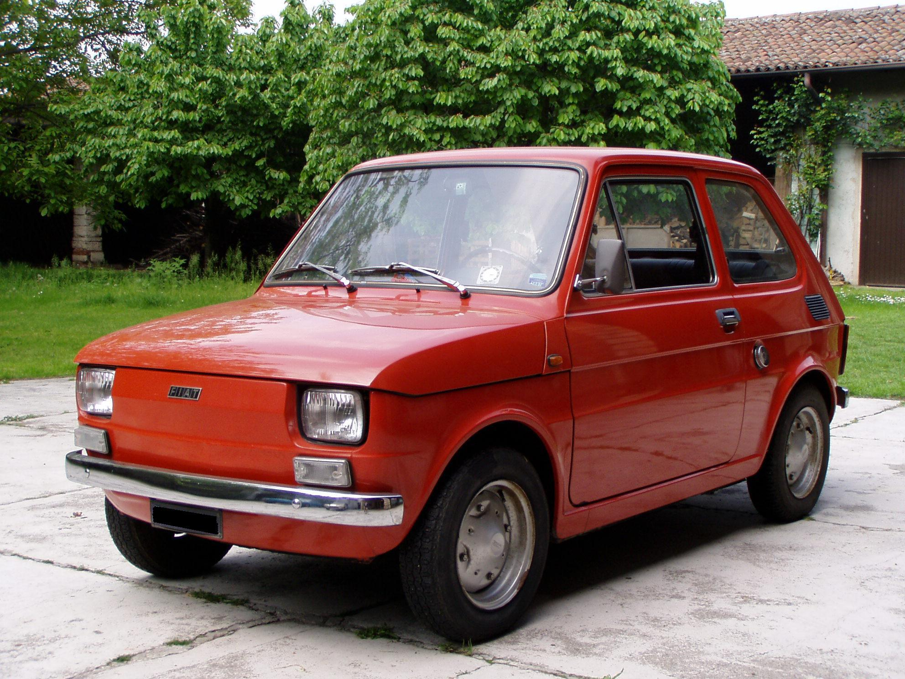
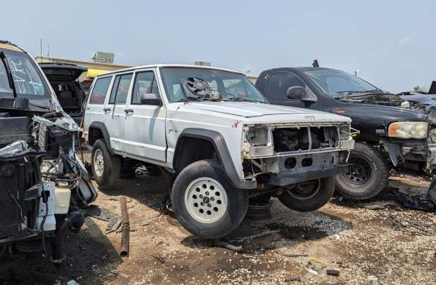
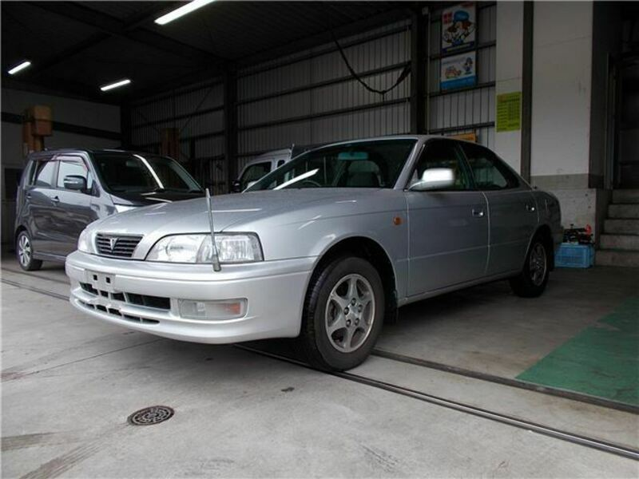
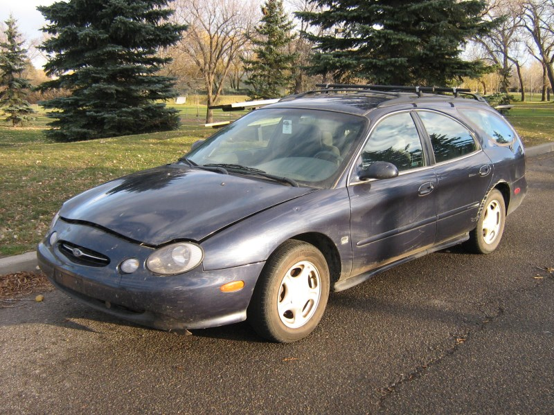
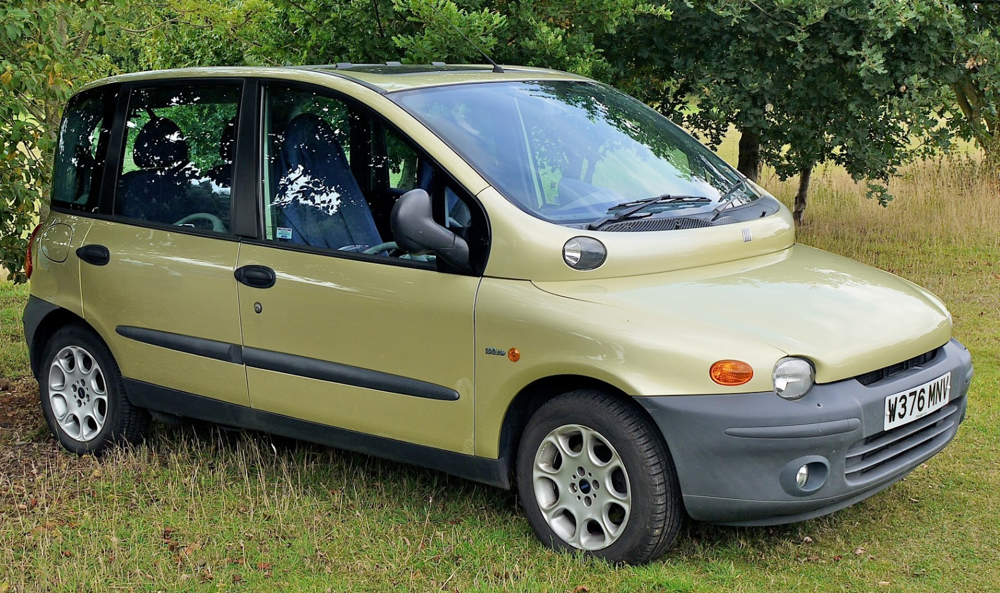

Still not convinced?
Here are some thoughts from people who followed our advice:
 Jenny T. - Fiat 126 (1986)
Jenny T. - Fiat 126 (1986)
"I was hesitant to buy an old car at first, but now I can't imagine driving anything else.
Sure, it may not have all the fancy gadgets and gizmos of a new car, but that's just less things to go bad.
And who needs heated seats when you got extra heat from the overheating engine?"

Ryan G. - Jeep Cherokee (1992)
"I used to worry about depreciation. Now I worry about whether my prize-winning begonias will survive another trip to the car wash in this beauty.
This Jeep Cherokee? A dream. She's got character, just like me. And a slightly less reliable air conditioner, I get it recharged every now and again.
But character is worth a few sweaty brow moments, wouldn't you say?"

 Tina C. - Toyota Camry (1996)
Tina C. - Toyota Camry (1996)
"My 1996 Toyota Camry is incredibly reliable. I've had it for three years and haven't had a single major repair...yet.
Besides, the cassette player is great for listening to my collection of vintage audiobooks."

Adeline M. - Ford Taurus (1998)
"My 2001 Ford Taurus...let's just say it's a testament to the enduring strength of American engineering.
I believe it might even be capable of withstanding a minor asteroid impact. I haven't tested this hypothesis yet, though."

Jacob S. - Fiat Multipla (1999)
"My aunt thought I was losing it when I traded my sensible Prius for this beauty.
Turns out, they were losing it, missing out on the thrill of constantly checking the oil and praying the radio doesn't spontaneously combust.
Five stars!"
